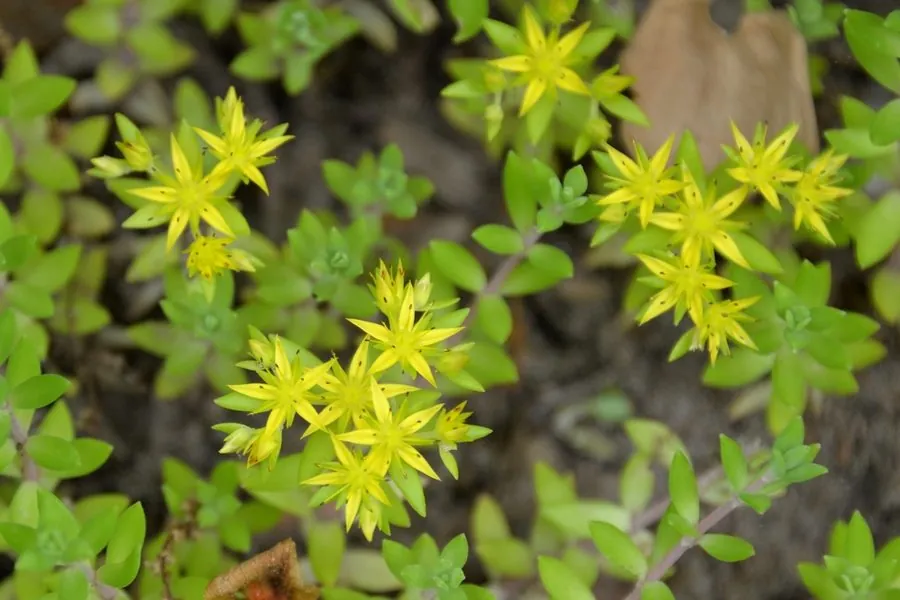

多肉植物 · 植物界
垂盆草 Sedum sarmentosum

景天科景天属多年生肉质草本，茎匍匐下垂、叶三片轮生，开黄色小花，是护坡地被与民间草药兼用植物。
- 分类
- 门被子植物门纲木兰纲目虎耳草目科景天科属景天属
- 栖息环境
- 山坡、石缝与溪边，喜温暖湿润、半阴环境，耐旱耐寒
- 地理分布
- 中国、日本、朝鲜；中国南北各地常见栽培或野生
- 保护级别
- IUCN 暂无评估；分布广，野生种群稳定
物种志
垂盆草为多年生肉质草本，高 10–30 厘米，茎细弱、匍匐下垂，节上易生不定根。叶片三片轮生，长圆形至倒披针形，长 1.5–2.5 厘米，肉质、淡绿色。聚伞花序顶生，花黄色，花瓣 5 枚，星形，花期 5–6 月；蓇葖果成熟时开裂。
本种分布于中国、日本、朝鲜，生于山坡、石缝与溪边，喜温暖湿润、半阴的环境，耐旱、耐寒，是护坡、地被与吊盆的优良植物。垂盆草全草入药，中药名“垂盆草”，有清热解毒、利湿退黄之效，常用于辅助治疗肝炎。它茎蔓下垂、叶片密集，适合种在坡地、墙头与花盆边缘，形成绿色瀑布。夏季高温时需适当遮阴，保持土壤微湿。
形态与习性
- 株高10–30 厘米，茎匍匐下垂
- 叶片三片轮生，长圆形，肉质
- 花期5–6 月，花黄色、星形
- 光照喜半阴，也耐一定直射光
- 水分喜湿润，耐旱但怕积水
- 土壤疏松肥沃、排水良好的壤土
- 主要用途护坡地被、吊盆观赏与全草入药
趣味知识
- 垂盆草的茎匍匐下垂，种在墙头或盆边会像绿色瀑布一样垂下来。
- 它的叶片三片轮生，是区别于佛甲草、薄雪万年草的重要特征。
- 中药“垂盆草”即取自本种，传统上用于清热解毒、利湿退黄。
- 垂盆草节上容易生根，剪一段茎放在土面就能长成新株。